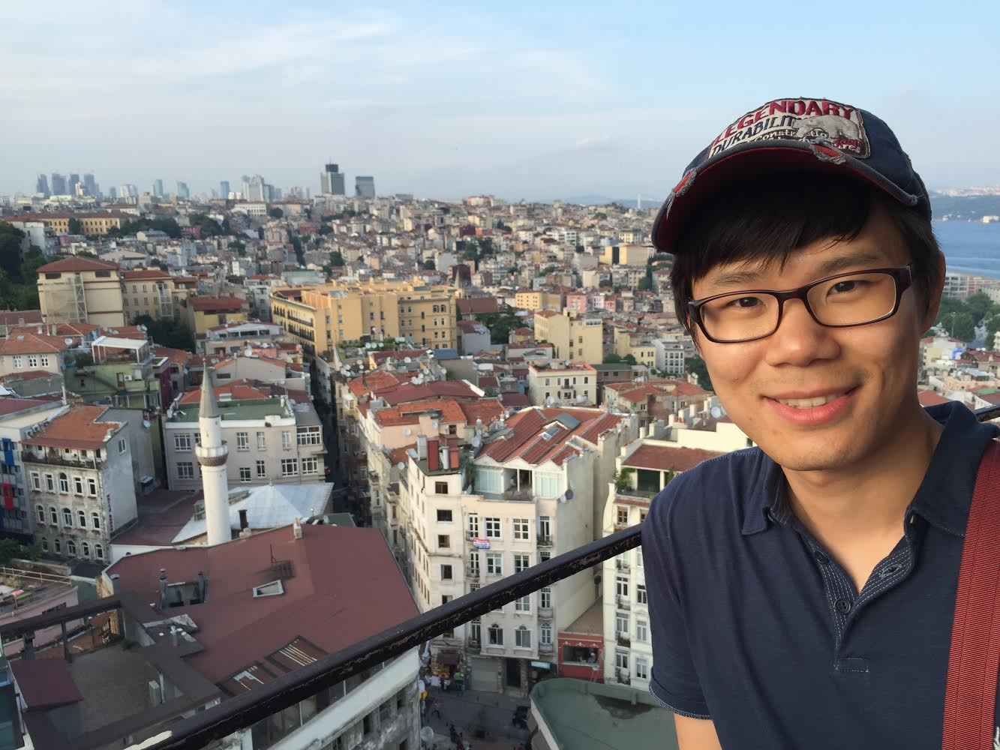

Sam Kim
Office: Gates Building, Room 494
Email: skim13@cs.stanford.edu

Bio
I am a PhD student in the
Applied Cryptography Group
at Stanford University. My advisor is
Dan Boneh. I got
my bachelor's in Computer Science and Mathematics from
Georgia Tech. My area of
research is Cryptography and Computer Security.
I spent the summer of 2017 at the
ENS Crypto Group
working with Hoeteck Wee. I
spent the summer of 2016 at the
Fujitsu
Laboratories of America working with
Arnab Roy and Hart Montgomery.
Papers
-
Constrained
Keys for Invertible Pseudorandom Functions
Dan Boneh, Sam Kim, David J. Wu
-
Access Control
Encryption for General Policies from Standard
Assumptions
Sam Kim, David J. Wu
ASIACRYPT 2017
-
A
Lattice-Based Universal Thresholdizer for Cryptographic
Systems
Dan Boneh, Rosario Gennaro, Steven Goldfeder, Sam Kim
-
Watermarking
Cryptographic Functionalities from Standard Lattice
Assumptions
Sam Kim, David J. Wu
CRYPTO 2017 (Awarded Best Paper by
Young Researchers)
-
Lattice-Based DAPS and Generalizations:
Self-enforcement in Signature Schemes
Dan Boneh, Sam Kim, Valeria Nikolaenko
ACNS 2017
-
Private
Puncturable PRFs From Standard Lattice
Assumptions
Dan Boneh, Sam Kim, Hart Montgomery
EUROCRYPT 2017
-
Function-Hiding
Inner Product Encryption is Practical
Sam Kim, Kevin Lewi, Avradip Mandal, Hart Montgomery, Arnab
Roy, David J. Wu